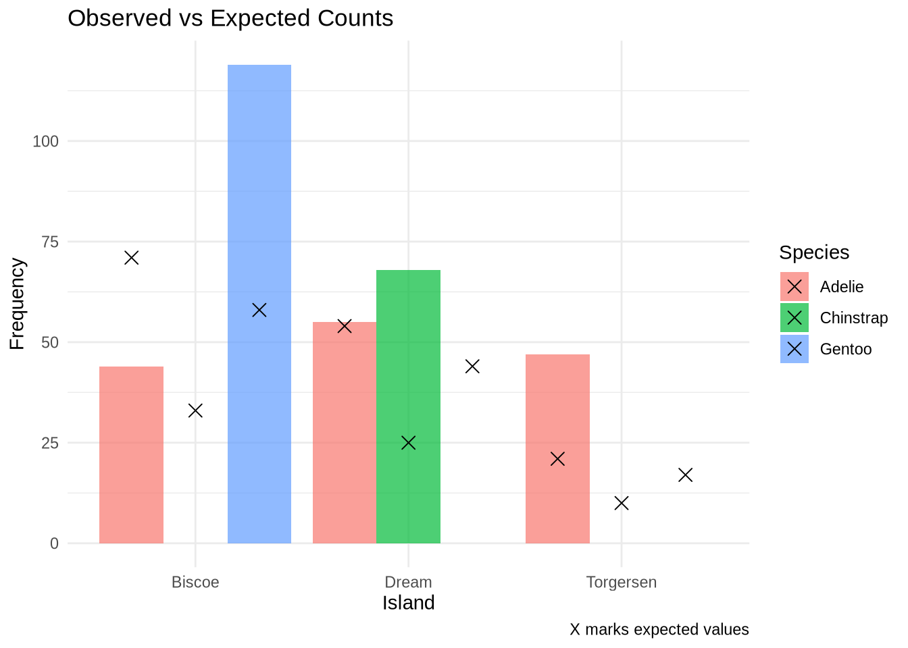
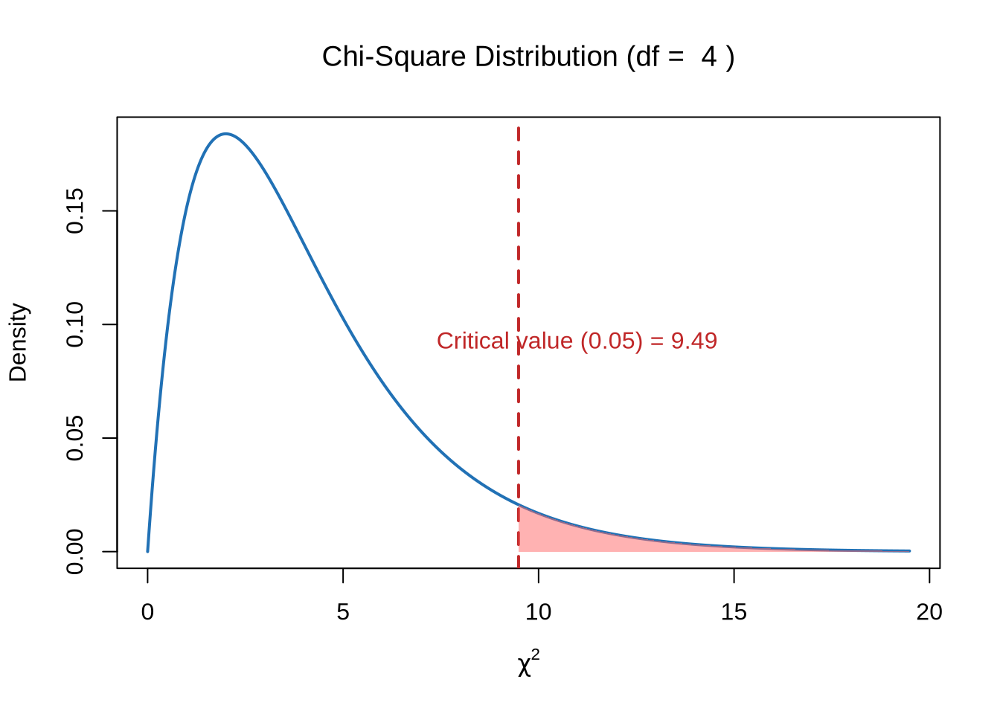

Testing Relationships Between Two Categorical Variables
Author
Biostatistics Teaching Team
Published
June 1, 2026
9.1 Learning Objectives
After this session, students will be able to:
Know
Understand
Do
Chi-Square test assumptions (independence, adequate sample size)
Chi-Square tests whether there is a relationship between two categorical variables
Perform Chi-Square test with chisq.test()
Interpretation of Chi-Square statistic and p-value
p-value < 0.05 means there is a significant relationship between variables
Create contingency tables with table()
How to report Chi-Square results in scientific format
Visualize results with ggplot2
9.2 Retrieval Practice & Introduction
Retrieval Practice: Before learning about Chi-square, try to recall: - What is the difference between categorical and numerical variables? - Give an example of categorical variables in biological research! - How do you present categorical data in a table?
9.3 What is the Chi-Square Test?
The Chi-Square Test of Independence helps us answer:
Is there a relationship between two categorical variables?
Or are they independent?
It compares the observed frequencies (what we actually see) to the expected frequencies (what we would expect if the variables were not related).
9.3.1Hinge Question
You are researching whether soil type (clay, sandy, loam) affects the type of plant growing (flower, vegetable, tree). Which variables are categorical?
Only soil type
Only plant type
Both variables (soil type AND plant type)
No categorical variables
Answer: C. Both variables are categorical — Chi-square test is used to test the relationship between two categorical variables.
library(palmerpenguins)
Attaching package: 'palmerpenguins'
The following objects are masked from 'package:datasets':
penguins, penguins_raw
library(ggplot2)library(dplyr)
Attaching package: 'dplyr'
The following objects are masked from 'package:stats':
filter, lag
The following objects are masked from 'package:base':
intersect, setdiff, setequal, union
library(ggrepel)library(ggthemes)
9.4 Example: Penguins on Islands
Let’s take a look at our penguin dataset again. How are the penguins distributed in the three islands?
Let’s compare the observed and expected values side by side:
# Extract observed and expectedobserved <-as.numeric(penguin_table)expected <-as.numeric(expected_matrix)# Combine into a data frame with labelsspecies <-rep(rownames(penguin_table), times =ncol(penguin_table))island <-rep(colnames(penguin_table), each =nrow(penguin_table))observation_table <-data.frame(Species = species,Island = island,Observed = observed,Expected =round(expected, 2))observation_table
The Chi-Square test statistic tells us how different the observed data is from what we would expect under the assumption that the two categorical variables are independent.
We use the following formula:
\[
\chi^2 = \sum \frac{(O - E)^2}{E}
\]
Where:
\(( O )\) = observed frequency (what we actually counted)
\(( E )\) = expected frequency (what we would expect if there were no association)
\(( \chi^2 )\) = the total test statistic, measuring the overall difference between observed and expected
9.5.1 How does it work?
We go through each cell of the contingency table and compute:
\[
\frac{(O - E)^2}{E}
\]
This value will be: - Close to 0 if observed and expected are similar - Larger when there’s a big difference between the two
Then we sum up all of these values from every cell to get the total Chi-Square statistic.
9.5.2 What does it tell us?
If the resulting \(( \chi^2 )\) value is large enough, it means the differences between observed and expected are too big to be due to random chance.
This suggests that the two variables (like species and island) are likely associated.
9.5.3 Visualize O vs E
To help you better understand where the differences come from, you can make a bar plot comparing observed vs expected frequencies:
ggplot(observation_table, aes(x = Island, fill = Species)) +geom_bar(aes(y = Observed), stat ="identity", position ="dodge", alpha =0.7) +geom_point(aes(y = Expected), shape =4, size =3,position =position_dodge(width =0.9)) +labs(title ="Observed vs Expected Counts",y ="Frequency", caption ="X marks expected values") +theme_minimal()

9.5.4 Let’s Calculate the Chi-Square value
Let’s go through each cell of the contingency table and compute:
\[
\frac{(O - E)^2}{E}
\]
And at the end, we will create a sum of all the component values
# Calculate chi-square components: (O - E)^2 / Ecomponent <- (observed - expected)^2/ expected# Add to the data frame (round if desired)observation_table$Component <-round(component, 2)# View the updated tableobservation_table
In our case, there are 3 species (rows) and 3 islands (columns):
\[
df = (3 - 1)(3 - 1) = 2 \times 2 = 4
\]
We can use the df to find the critical value from a Chi-Square distribution table at a significance level of 0.05.
# Parametersdf_val <-4alpha <-0.05# Critical value (right-tail threshold)critical_value <-qchisq(p =1- alpha, df = df_val)# Generate x and y for chi-square density curvex <-seq(0, critical_value +10, length.out =500)y <-dchisq(x, df = df_val)# Plot the Chi-Square distributionplot(x, y, type ="l", lwd =2, col ="#2171B5",ylab ="Density", xlab =expression(chi^2),main =bquote("Chi-Square Distribution (df = "~ .(df_val) ~")"))# Add vertical line at critical valueabline(v = critical_value, col ="#c02728", lwd =2, lty =2)# Shade the rejection region (right tail)x_shade <-seq(critical_value, max(x), length.out =100)y_shade <-dchisq(x_shade, df = df_val)polygon(c(critical_value, x_shade, max(x_shade)),c(0, y_shade, 0),col ="#FF666680", border =NA)# Annotate the plottext(critical_value +1.5, max(y)*0.5,paste0("Critical value (0.05) = ", round(critical_value, 2)),col ="#c02728")

9.5.6 Interpretation
Now we compare the calculated Chi-Square statistic to the critical value from a Chi-Square distribution table at a significance level of 0.05.
If:
\(( \chi^2 = 284.59 )\)
\(( df = 4 )\)
Critical value at \(( \alpha = 0.05 )\) is 9.49
Then:
\[
284.59 > 9.49
\]
So we reject the null hypothesis.
Conclusion:
- There is a statistically significant relationship between penguin species and the islands where they are found.
- The distribution is not uniform and likely reflects ecological or behavioral preferences.
9.6 Running Chi-Square Test in R
R has a built-in function for the Chi-Square test, so we can directly use chisq.test() instead of calculating it manually:
Hint Ladder: If you’re confused about how to calculate Chi-Square manually: - Hint 1: Remember the formula: χ² = Σ(O - E)² / E - Hint 2: Calculate expected frequency: E = (row total × column total) / grand total - Hint 3: Use chisq.test() for direct results
# Run the chi-square testchi <-chisq.test(penguin_table)chi